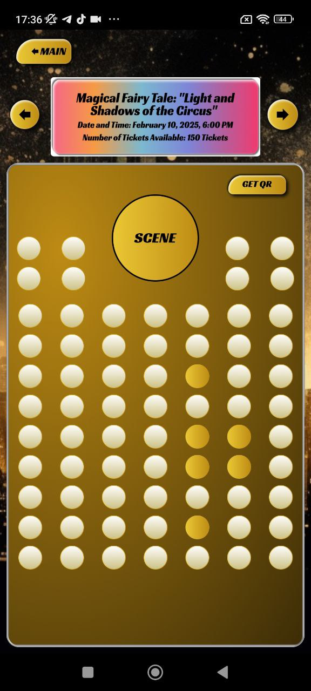
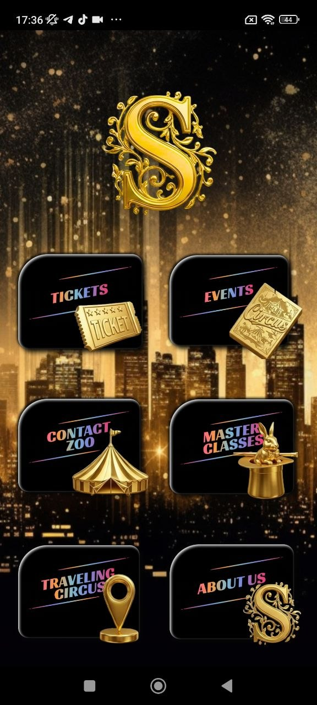
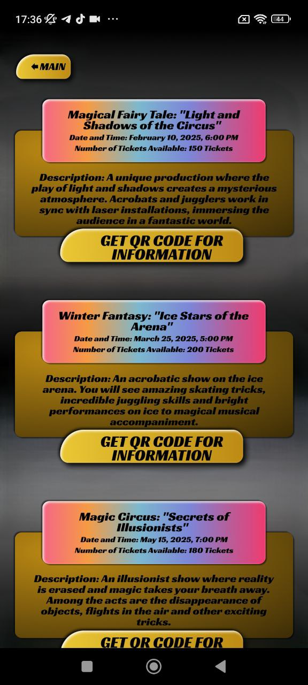
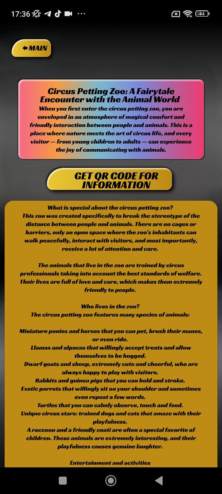
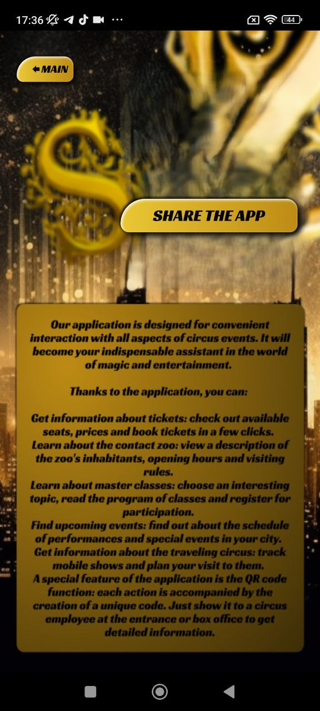

Smart Tickets
View available shows, choose seats, check ticket availability and move toward booking in a clean visual flow
SCity Circus Fest transforms your festival visit into a premium digital experience. Discover shows, reserve seats, explore the contact zoo, join master classes, follow travelling circus locations and unlock information with stylish QR code access


Instead of jumping between messages, websites and random screenshots, visitors get one clear place for tickets, event schedules, descriptions, attractions, educational activities and smart QR access
The SCity Circus Fest app combines elegant presentation with practical tools, helping guests navigate the entire festival experience from the first click to the final show
A dramatic visual style inspired by stage lighting, luxury textures and festival energy
Simple category structure helps users find what they need without confusion
Each section includes practical content, not just decorative screens
Built to help before, during and after the festival experience
These feature blocks are designed for a premium landing page and clearly explain the value of the product
View available shows, choose seats, check ticket availability and move toward booking in a clean visual flow
Discover detailed show cards, performance descriptions, dates and visitor-friendly event summaries
Explore a warm, family-oriented attraction with animal descriptions, visitor notes and entertainment context
Introduce beginners to circus arts with lesson cards, educational descriptions and registration prompts
Track mobile locations, city stops and visit planning through a special section focused on movement and discovery
Instant QR access adds speed and polish to information retrieval, entry support and guided visitor interactions
We focus on the strongest visuals to keep the landing page clean, convincing and premium
The home screen gives users instant access to the core categories: tickets, events, contact zoo, master classes, travelling circus and about information
One of the most useful app moments: visitors can inspect the stage plan, available seats and QR-related actions without leaving the experience

Vivid event cards make each show feel special and easy to scan
Elegant educational content designed for kids, families and curious visitors

A dedicated space for storytelling around one of the most family-friendly attractions

Beautiful presentation of the app’s smart QR experience for festival visitors
The strongest product pages balance emotion, clarity and trust. This section does exactly that
The design language feels rich, theatrical and memorable. That matters for entertainment apps, because the visual atmosphere becomes part of the user experience
The structure is not decorative only. It supports clear pathways to tickets, events, information blocks and educational content
Visitors can understand what is happening, when it is happening and how to engage, which makes the app valuable before and during attendance
The blend of performances, zoo content and classes makes the product feel more complete and attractive for a broad audience
A strong app website should show how the product fits real user behavior
Users land on the site, understand the value and see how the app enhances the festival visit
They explore performances, classes, zoo content and schedule-based information
The app supports action with seat selection, details and access-related tools
Visitors interact on-site more smoothly and get details through a polished mobile flow
These are styled sample reviews for the landing page presentation
“A very unusual and beautiful app. It feels like part of the circus experience, not just a utility”
“The event cards and ticket screens are the best part. Clear, stylish and easy to understand”
“I liked that there is more than just shows — the zoo and master classes make the app feel complete”
You can explore tickets, events, contact zoo details, master classes, travelling circus updates and QR-based information screens
No. Ticketing is one important feature, but the app is designed as a full festival companion
Yes. It is especially useful on-site thanks to its visual navigation and QR code functionality
Yes. The contact zoo and master class sections make it attractive for visitors of different ages
Keep tickets, performances, attractions and QR screens in one place. Perfect for visitors who want convenience with a premium visual feel